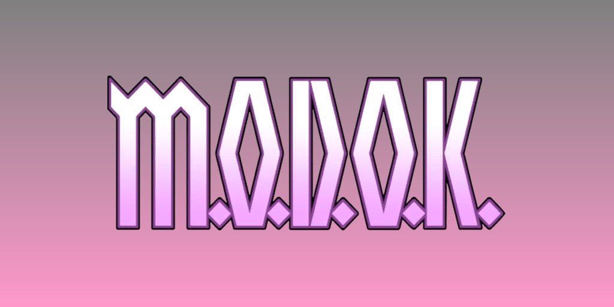
M.O.D.O.K. (George Tarleton) (Terre-616)
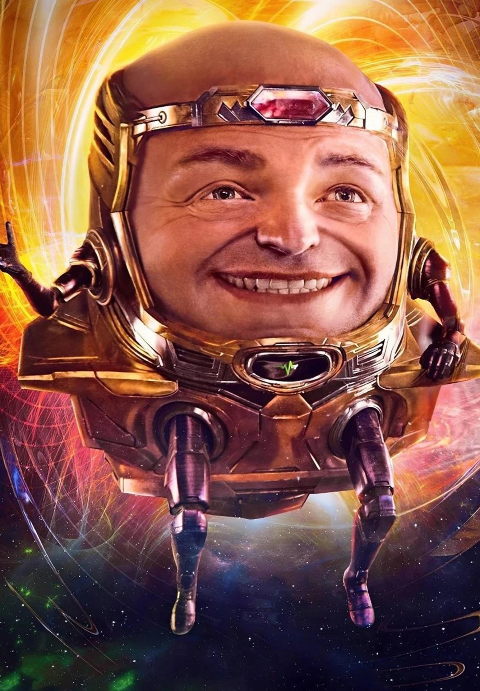
Origines :
Il existe plusieurs récits racontant la vie de George Tarleton avant qu'il ne devienne M.O.D.O.K.
La première version raconte que George Tarleton était un technicien qualifié originaire d'Érié, en Pennsylvanie.
La seconde, rapportée par son père, indique que George manquait cruellement d'intelligence et fut embauché par l'A.I.M. comme agent d'entretien.
La troisième le décrit comme un homme intelligent, engagé par l'armée américaine pour effectuer des recherches sur de nouvelles armes, et que ce dernier préleva des échantillons sur les monstres de Sin-Cong pour les étudier.
Mais peu importe la version, Tarleton a rejoint le groupe scientifique radical AIM (Advanced Idea Mechanics) et a collaboré avec eux à la création du Cube Cosmique, un appareil aux capacités infinies.
Le Scientifique Suprême (Lyle Getz) a décidé qu'il leur fallait un moyen d'étudier ce Cube Cosmique et a créé le Projet MODOC (Mental Organism Designed Only for Calculation) afin d'analyser et explorer le Cube et d'améliorer la productivité de l'organisation dans ses recherches scientifiques, tout en restant soumis à la haute hiérarchie.
Pour ça, ils ont transformé Tarleton par mutagenèse en un être surintelligent, MODOC.
Son crâne étant devenu trop massif et trop lourd pour son corps fragile, ils l'ont installé dans un fauteuil volant nommé le Fauteuil de l'Apocalypse.
Ces scientifiques ont imprudemment négligé la théorie selon laquelle des capacités supérieures engendrent naturellement une ambition démesurée, et il ne fallut pas longtemps à MODOC pour se retourner contre ses créateurs et renverser l'AIM.
Il adopta alors un nouvel acronyme pour son titre : MODOK (Mental Organism Designed Only for Killing) car il était désormais, selon lui, plus un tueur impitoyable qu'un comptable.
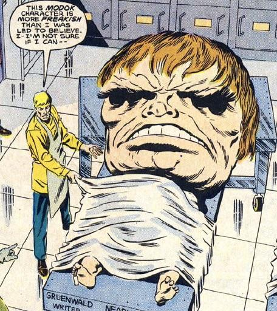
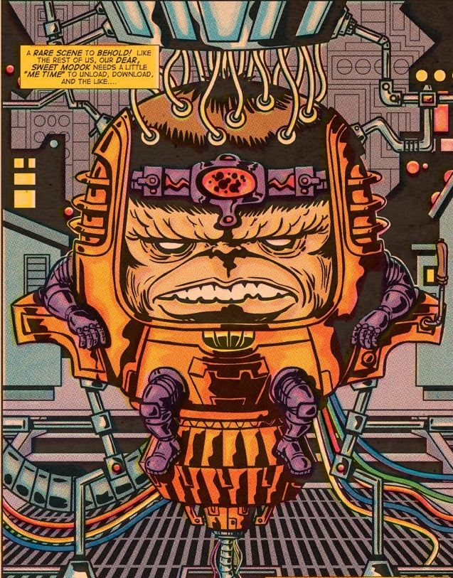
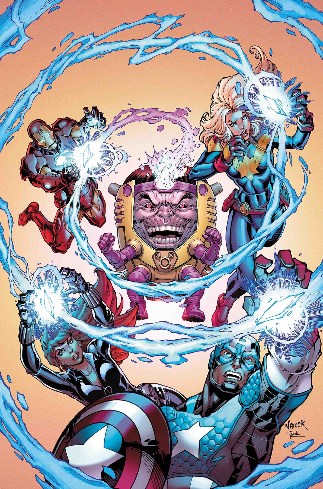
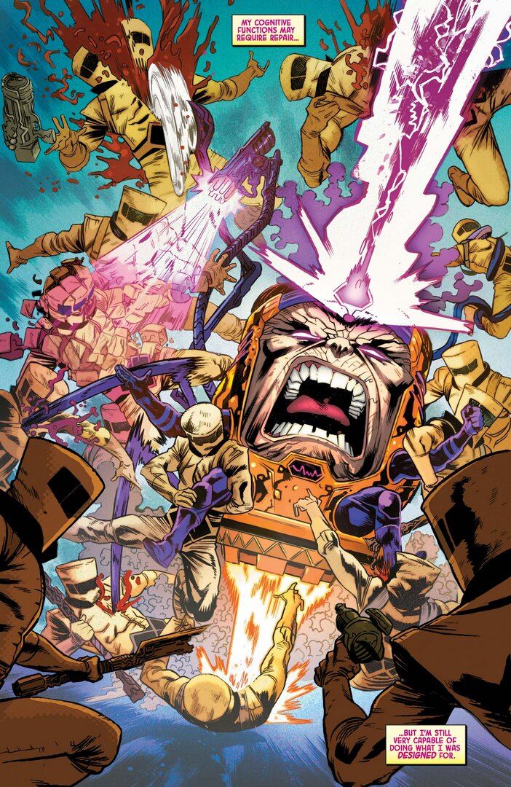
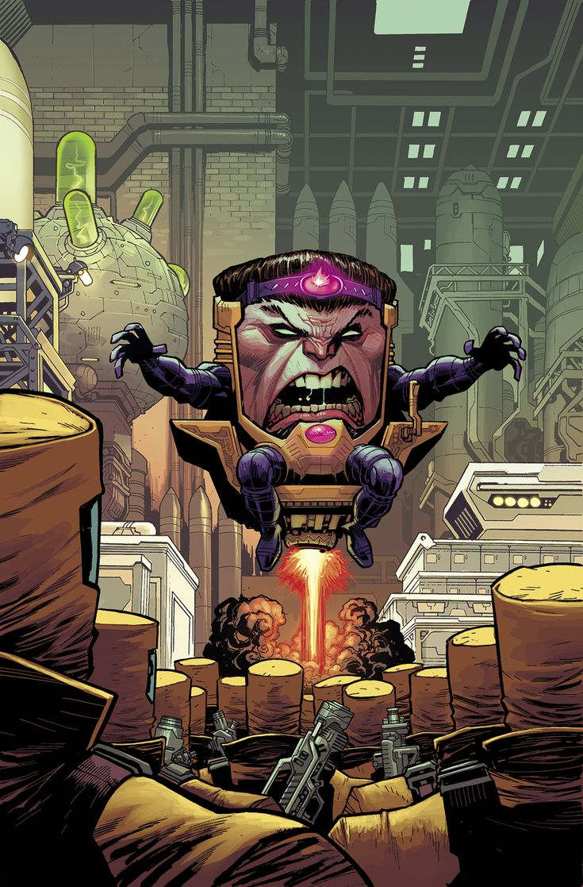
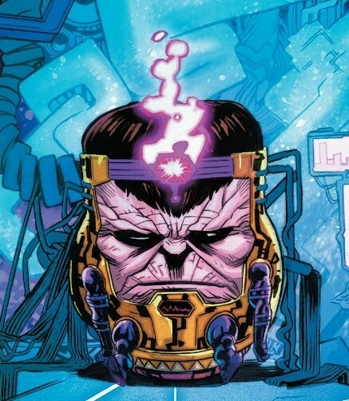
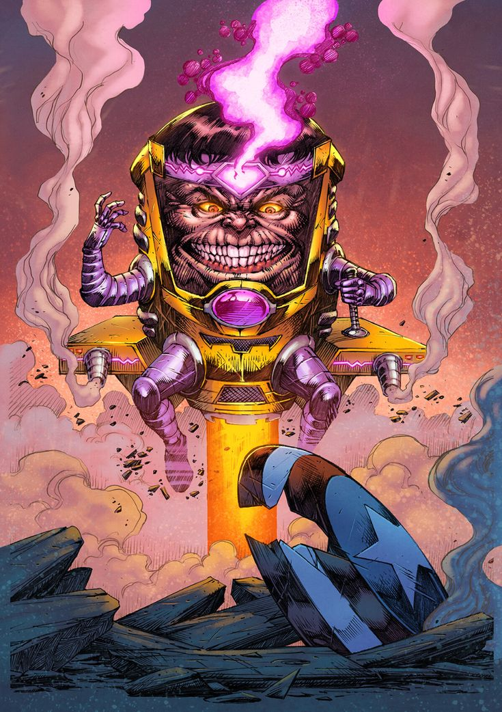
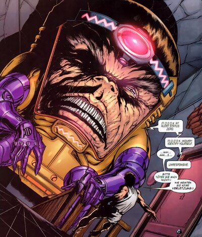
Capacités :
MODOK a été altéré par mutation artificielle afin d'en faire un véritable génie.
Désormais, il est capable de comprendre n'importe quel sujet d'études et d'élaborer des scénarios tactiques et stratégiques grâce à d'impressionnants calculs de probabilité, comme le ferait un super-ordinateur.
C'est également un expert en ingénierie, en technologie et possède de parfaites connaissances dans de nombreuses sciences.
La taille surdimensionnée de son cerveau a développé ses pouvoirs mentaux, comme de la télépathie (à un niveau très modéré), du contrôle mental de masse et est capable de générer un rayon psychique destructeur.
Son casque high-tech l'aide à se concentrer et à utiliser au mieux sa puissance psychique.
Il est, par exemple, capable de créer des champs de force grâce à sa force mentale.
Ses pouvoirs ont une portée maximale d'environ 8 km.

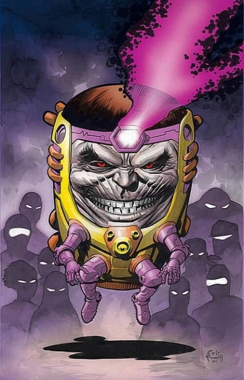
Apparence :
MODOK possède un corps réellement difforme.
Il possède une tête gigantesque occupant pratiquement l'intégralité de son design, avec un visage large et déformé avec des traits humains poussés à l'extrême.
Son corps est presque atrophié, avec de tout petits bras et jambes incapables de supporter le poids colossal de son crâne.
Pour se déplacer, MODOK flotte constamment dans un fauteuil technologique blindé équipé d'armes, de propulseurs et de systèmes informatiques avancés.
Cette chaise volante, souvent jaune et noire, fait partie intégrante de son apparence.
Il porte souvent une armure cybernétique violette et dorée, ainsi qu'un harnais mécanique le reliant à son fauteuil.